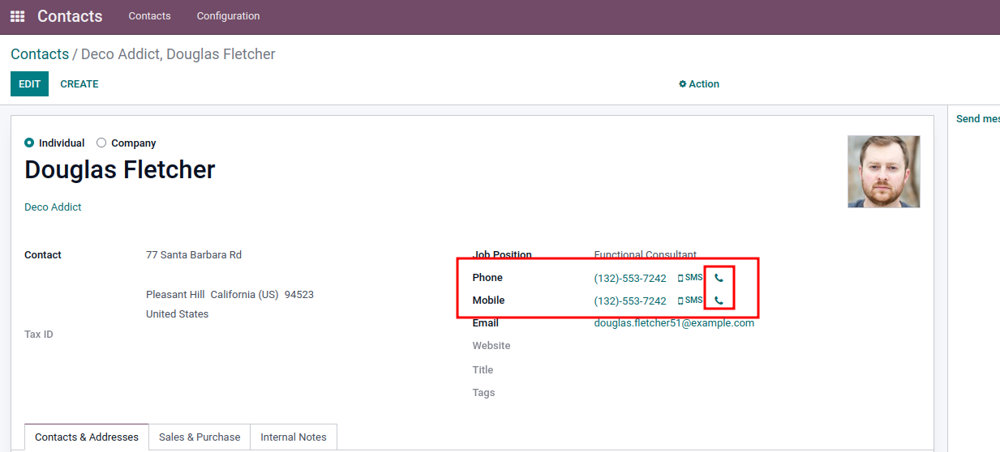

You are just one click away!!
Just open any Contact/Customer/Vendor and click on the dial icon after the phone/mobile.


Go to Contact/Customer/Vendor and open any record. You will find the call icon after the phone or mobile field if you have entered any values. Just click on the call icon button and it will initialize the call! Yes, you heard it right. Just one click away!